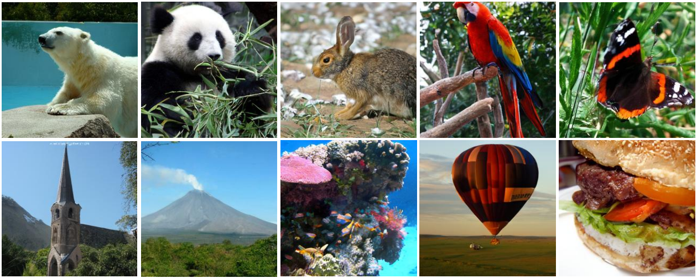
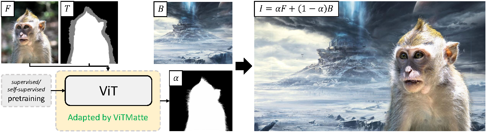
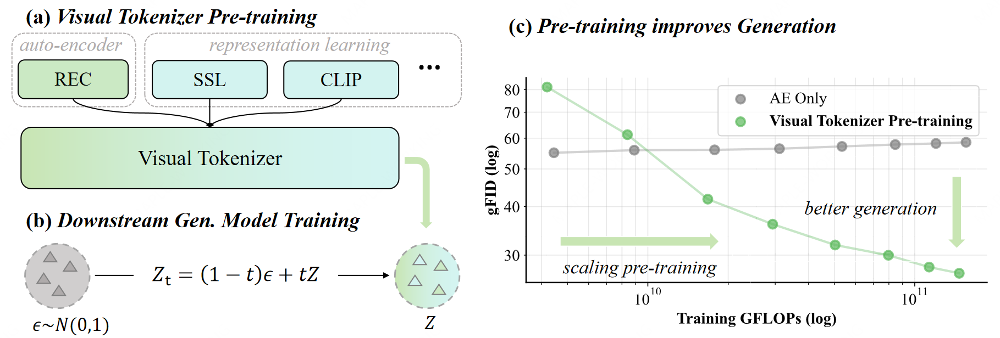
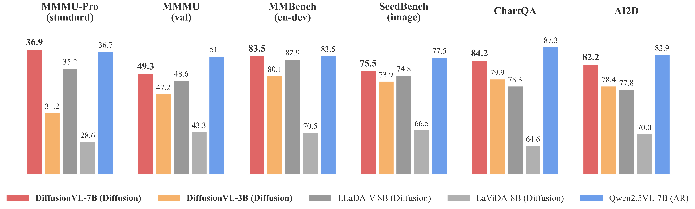
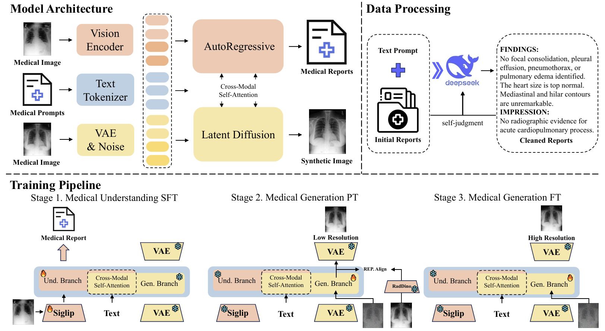
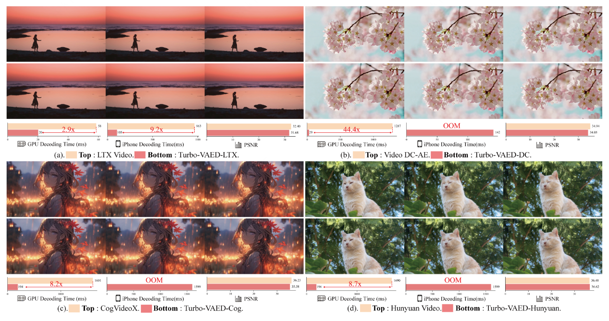
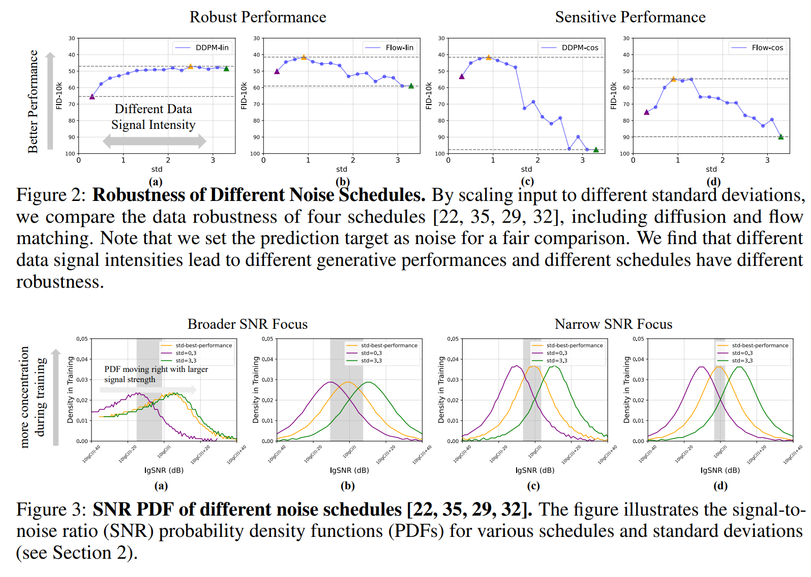
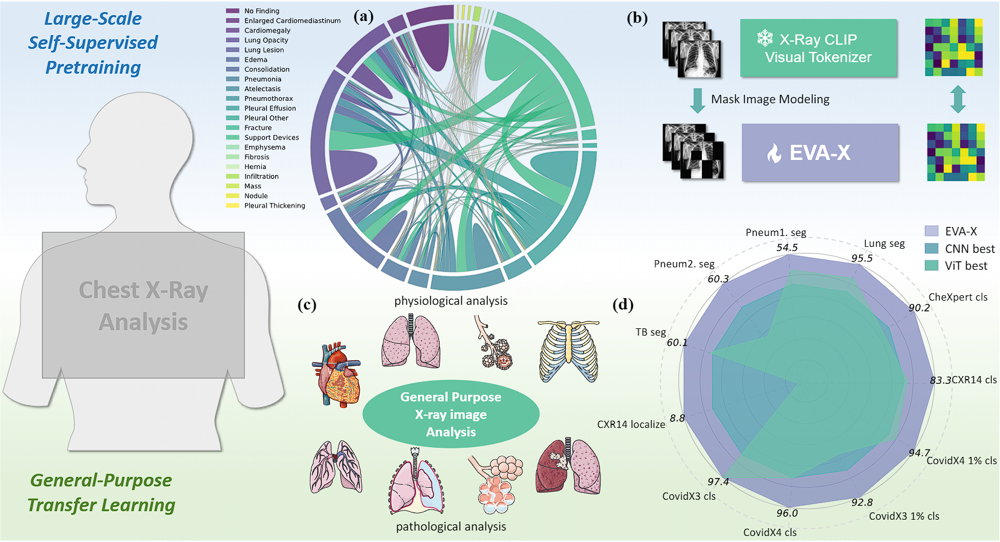
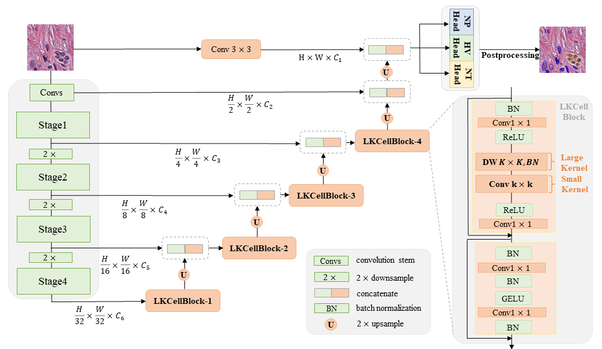

Publications
Selected Publications

Reconstruction vs. Generation: Taming Optimization Dilemma in Latent Diffusion Models
CVPR 2025 Oral (CCF-A)
Accepted with FULL score by CVPR.
Rank 1st in ImageNet 256×256 Generation with FID=1.35 (During 2025.01-02)
Rank 1st in ImageNet 256×256 Generation with FID=1.35 (During 2025.01-02)

ViTMatte: Boosting Image Matting with Pretrained Plain Vision Transformers
Information Fusion (IF=18.6 at acceptance), 2023
Integrated into  Hugging Face Transformers as a standard matting method.
Hugging Face Transformers as a standard matting method.
Integrated into the professional tool Nuke, with model weights downloaded over 46 million times.
Integrated into the professional tool Nuke, with model weights downloaded over 46 million times.
Other Publications (First author or co-first author only)






